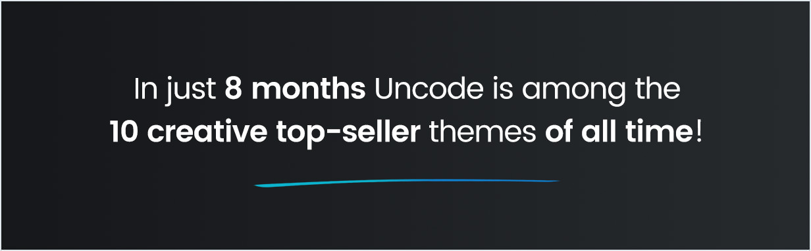

Uncode – Creative Multiuse WordPress Theme
Uncode is a pixel perfect creative multi purpose WordPress Theme based on Visual Composer designed with terrific attention to details, flexibility and performance. It is ultra professional, smooth and sleek, with a clean modern layout, for almost any need: agency, freelance, blog, magazine, portfolio, photography, corporate and ecommerce shop. Build beautiful, intelligent websites. Uncode is the result of many years experience in creating award winning web designs by a team of designers and developers dedicated to creating visually stunning websites.
With over 30+ Homepage Concepts ready to go or combine, build a layout has never been easier. There is a huge range of styled pages waiting for your customisation, anything you can think of can be built with our unique take on Visual Composer. If you are searching for innovative, modern and clean WP Theme, Uncode is Top Recommendation.
